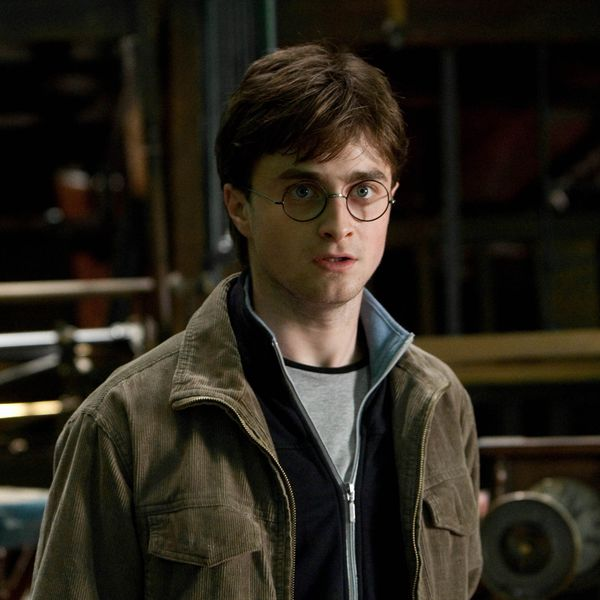
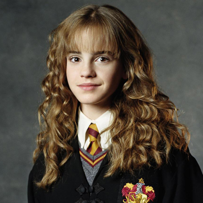

Name: Harry Potter Erstes Betreten von Hogwarts : 1991 Beste Freunde : Ron,Hermine Jahrgang : 1980 Merkmale : Blitznarbe, Brille  Name : Hermine Granger Erstes betreten von Hogwarts:1991 Beste Freunde : Harry, Ron Jahrgang: 1980 Merkmale:Braunes Haar  Name:Ron Weasley Erstes betreten von Hogwarts:1991 Beste Freunde:Harry, Hermine Jahrgang:1980 Merkmale: Sommersprossen Name: Lord Voldemort (Tom Marvolo Riddle) Erstes betreten von Hogwarts: 1938 Beste Freunde: Keine Jahrgang:1927 Merkmale: Schlangenaugen, Keine Nase, Grünliche Augen Meine Lieblings Szene: